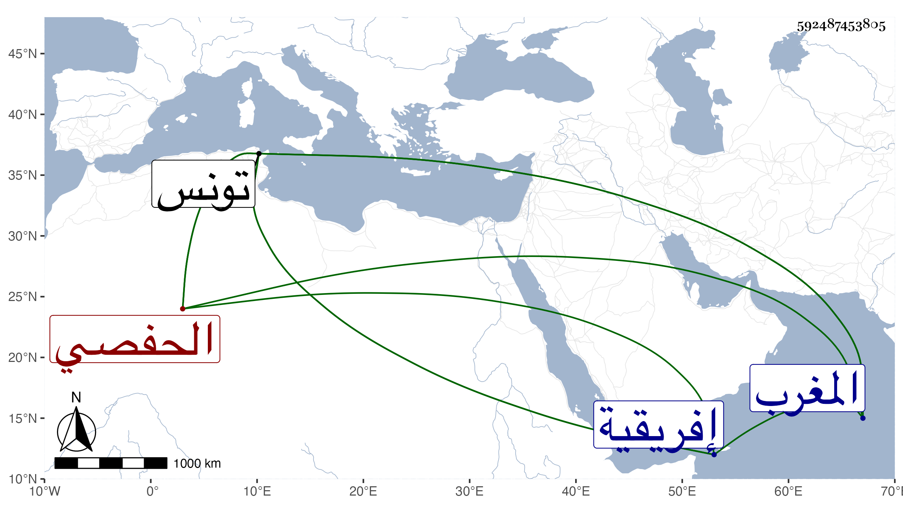

0902Sakhawi.DawLamic.ITO20230111-ara1.EIS1600.592487453805
Biography ID: 592487453805
280
محمد بن محمد بن عبد العزيز بن أحمد بن محمد بن أبي بكر المنتصر أبو عبد الله بن الأمير أبي عبد الله بن أبي فارس بن أبي العباس الهنتاني الحفصي الماضي أبوه وجده . ملك المغرب بعد جده في ذي الحجة سنة سبع وثلاثين فلم يتهن في أيام ملكه لطول مرضه وكثرة الفتن سيما مع قصر مدته فإنه مات في يوم الخميس حادي عشرى صفر سنة ثمان وثلاثين بتونس واستقر بعده شقيقه عثمان الماضي . ذكره شيخنا في إنبائه وخالف غيره فجعل سنة وفاته سنة تسع وثلاثين وكأنه أشبه وسمى جده عثمان وهو غلط ولقبه بالمنصور وقال : ملك تونس وبلاد إفريقية .
